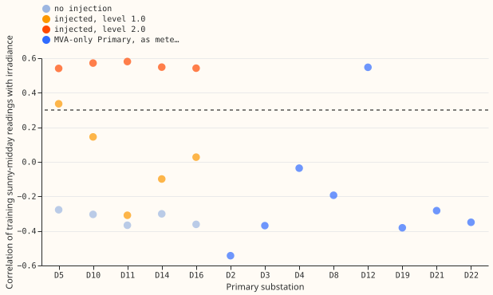
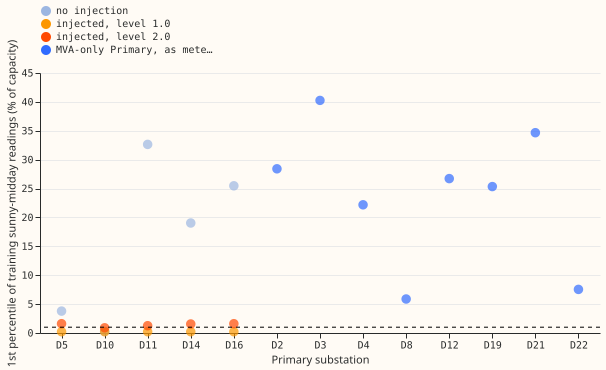
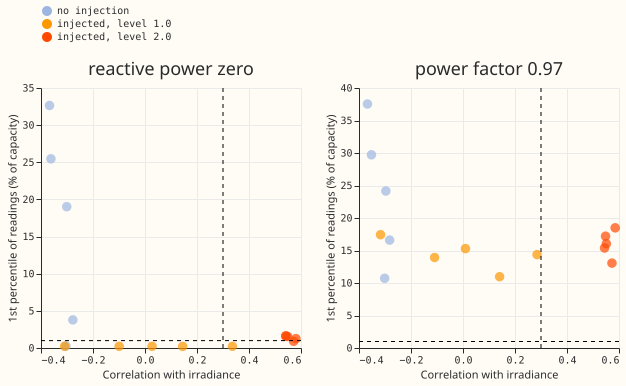

MVA fold: reverse-flow rule from the correlation with irradiance
A rule that checks two things on the training sunny-midday meter readings picks the right fit at every case the registered test scores, but it breaks as soon as the readings include reactive power. We asked whether the 8 MVA-only Primaries (the eight substations that report only apparent power, in MVA) can be told apart from substations with no reverse flow, using the meter readings and the irradiance alone. The rule picks the fit through the meter (L0, which can see reverse flow) if the readings rise with irradiance (Pearson correlation above +0.3) or the lowest readings come close to zero (1st percentile below 1.0 percentage point of capacity). Otherwise the rule picks the naive fit (N), which reads the magnitude as signed power. With reactive power zero, the rule is right at D5 (the substation with no reverse flow), at the five injected cases, and at Stickney (D12). It picks the naive fit at the other seven MVA-only Primaries. With reactive power at power factor 0.97, the rule fails at moderate injected solar. Verdict: partly supported. The registered pass test, which uses reactive power zero, passes in full. The unregistered check at power factor 0.97 fails, and the verdict word reflects that check.
This follows experiment 365, whose
rule on the lowest readings alone failed at D5 and at Stickney, and which proposed testing how the
readings move with irradiance. No model was refitted: the score of each case is the stored score of
the fit the rule chooses, from experiment
358, which defines the injection
levels and the signed fit (S) used for comparison. The code reuses the way experiment 365 builds the
readings. The rule and both thresholds were written into result.md before any statistic was
computed. The threshold of 1.0 on the 1st percentile was chosen after seeing the numbers of
experiment 365 (D5's 1st percentile was 3.79 and the injected cases' were 0.2 to 1.6), so it is
not an out-of-sample test. The injected cases are also a weak test of the percentile condition.
With reactive power zero the reading is the absolute value of the signed flow, so any substation
given enough injected reverse flow has a 1st percentile near zero, and the percentile test passes at
the level 1.0 cases by construction. D5 at level 1.0 also has a natural correlation above +0.3
(+0.34 at the 2025 cut and +0.47 at the 2024 cut). All five injected substations also receive the
same recorded solar-farm output (farm A), so the five injected cases are not independent evidence of
how the rule behaves on other farms. The correlation threshold of +0.3 comes from the design brief's
measurements.



Figure 3 shows the failure: at power factor 0.97 every injected case at level 1.0 has a 1st percentile of 11 to 17 and a correlation of +0.28 or lower (the highest is D5), so both dashed thresholds are missed at the 2025 cut.
Results (reactive power zero, plain direction accuracy on sunny half-hours)
- D5, no injection: passes. The statistics are a correlation of -0.28 and a 1st percentile of 3.79 (2025 cut), so the rule chooses N. Accuracy is 0.980, the same as the signed fit's 0.980. At the 2024 cut the chosen accuracy is 0.963 against 0.961. Experiment 365's threshold of 5 chose L0 here, with accuracy 0.35.
- Injected cases: pass. At the 2025 cut the chosen fit is within 0.02 of the signed fit at 5 of 5 substations at both levels. At the 2024 cut the counts are 4 of 5 at level 1.0 (D11, gap 0.026) and 5 of 5 at level 2.0. The rule chooses L0 at all 5 substations in every injected case. At level 2.0, where 92 to 99% of sunny half-hours have reverse flow, the chosen accuracy equals the signed fit's at every substation (0.94 to 0.99).
- Which test carries which case. At level 2.0 the correlation exceeds +0.3 at 5 of 5 substations at both cuts. At level 1.0 the correlation exceeds +0.3 at 1 of 5 (D5), so the 1st percentile below 1.0 chooses L0 at the other four. The correlation alone would miss four of the five level 1.0 cases.
- The yardstick is weak without reverse flow. Plain accuracy against the signed fit is near 1.0 wherever almost no half-hours reverse, so D11, D14, D16 and (at no injection) D5 pass trivially. The accuracy on only the sunny half-hours with true reverse flow is more telling. At level 1.0 and the 2025 cut the mean over the 5 substations is 0.90 for the signed fit and 0.91 for the chosen fit (0.31 for N), and at the 2024 cut 0.955 and 0.951 (0.545 for N). At level 2.0 it is 1.00 for the signed and chosen fits and 0.00 for N at both cuts. At power factor 0.97 the chosen fit's mean falls to 0.008 (2025 cut) and 0.22 (2024 cut) at level 1.0.
- No injection, other substations. D10 has genuine reverse flow in 14% of sunny half-hours, and the rule chooses L0 (1st percentile 0.28) with the same accuracy as the signed fit. D11, D14, and D16 have none, and the rule chooses N.
- Census, not scored. The rule chooses L0 at Stickney (D12), with correlation +0.55 and 1st percentile 26.7. The choice of L0 matches the prediction, but the registered prediction of a correlation of about +0.75 to +0.83 at D12 missed: the correlation is +0.55. The rule chooses N at D2, D3, D4, D8, D19, D21, and D22, whose correlations are -0.54 to -0.04 and whose 1st percentiles are 5.87 to 40.25. Marsh Lane (D8) and Langrick (D22) are the closest calls on the 1st percentile (5.87 and 7.55) and stay with N. D12 is the only one of the eight with a positive correlation.
- Power factor 0.97: fails. With reactive power at power factor 0.97 in the readings, the readings stay well above zero (1st percentile 10.7 to 37.6 with no injection, and 11.0 to 17.4 at level 1.0). At level 1.0 the rule picks N at 5 of 5 substations at the 2025 cut and 4 of 5 at the 2024 cut. The mean chosen accuracy is 0.31 (2025 cut) and 0.52 (2024 cut), against the signed fit's 0.86 and 0.81. The number of substations within 0.02 is 0 of 5 (2025 cut) and 1 of 5 (2024 cut) at level 1.0, and 5 of 5 at level 2.0. With no injection, D10 at the 2025 cut is 0.042 below the signed fit. This repeats experiment 358's finding for the fit through the meter.
Checks
- Triggers. Trigger 7 of the
ml-experimentskill may apply, because the planned next steps of the MVA sequence depend on this result. No audit was run, because the experiment refits nothing and reads two stored result sets, and this session started no sub-agents. The maintainer decides whether to order one. Trigger 1 (a failed control) did not fire at reactive power zero, and fired at power factor 0.97, where the rule fails at level 1.0 as the earlier experiments did. - Median against mean forecast. Not applicable: no forecasts were made.
Caveats and what to try next
- The pass test covers only reactive power zero. The earlier experiments of the sequence found that real readings contain reactive power. If the sequence continues, the next step is a rule that still works at power factor 0.97, for example one that corrects each reading for an estimated reactive power before computing the statistics.
- The 1.0 threshold was informed by experiment 365, as stated above.
- The census statistic uses the metered reading at the MVA-only Primaries, so a reading changed by generation added to the magnitude (the Marsh Lane change in April 2025) also moves it.
- The census has no ground truth: the claim that D12 has reverse flow and the other seven do not comes from experiment 110 and the design brief, not from a signed measurement.